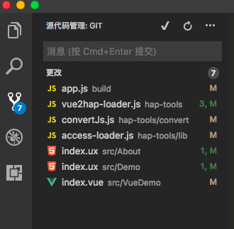
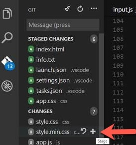
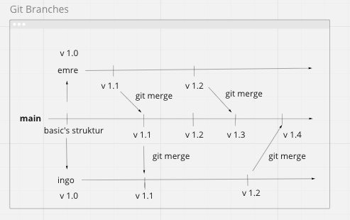
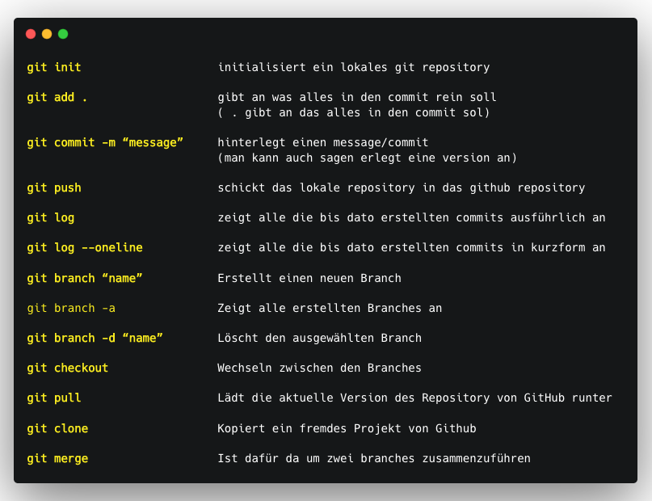

Was ist Git?
Git und Github sind nicht das gleiche! Git ist ein VSC-Tool und GitHub ist eine Plattform die Git
benutzt, es gibt auch andere zb. GitLab, GitBucket, BitBucket, Sourceforge und so weiter.
Git wird überall benutzt und ist eins der wichtigsten Tools für Entwickler geworden. Dadurch können
Entwickler von überall zusammenarbeiten.
Git ist ein Versionverwaltungstool, das bei jedem comitten eine Art Schnappschuss von deinem Projekt
macht. Hinterher hat man einen Stapel von Schnappschüssen.
Lokal = Working Directory → Änderungen werden als Modified dargestellt

Staged Area = Index → Daten werden für den commit vorgemerkt sind aber noch nicht hochgeladen

.git directory repository → Daten sind von lokal auf git geklont worden und stehen als snapshot bereit

Git Branch / Git Merge

Git im Terminal

Visual Studio Code und Git
A - Added (This is a new file that has been added to the repository)
M - Modified (An existing file has been changed)
D - Deleted (a file has been deleted)
U - Untracked (The file is new or has been changed but has not been added to the repository yet)
C - Conflict (There is a conflict in the file)
R - Renamed (The file has been renamed)
S - Submodule (In repository exists another subrepository)